HELIOSLINK es un proyecto orientado al desarrollo e integración de soluciones tecnológicas enfocadas en redes, infraestructura digital, monitoreo de sistemas y ciberseguridad. Su objetivo es centralizar herramientas que permitan mejorar la administración de recursos tecnológicos, optimizar la conectividad y facilitar la gestión de plataformas en entornos académicos y empresariales.
Desarrollar soluciones tecnológicas innovadoras que permitan mejorar la conectividad, la administración de redes y la seguridad de la información mediante el uso eficiente de herramientas digitales.
Convertirse en una plataforma tecnológica de referencia para la integración de infraestructura digital, monitoreo de redes y gestión de servicios informáticos, destacando por la innovación y eficiencia en el desarrollo de soluciones.